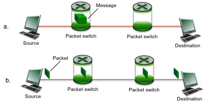

Due Oct. 7, 2021 in class or by email to the instructor. This assignment gives you a chance to analyze communication systems.

Figure for P10: End-end message transport: (a) without message segmentation; (b) with message segmentation. |